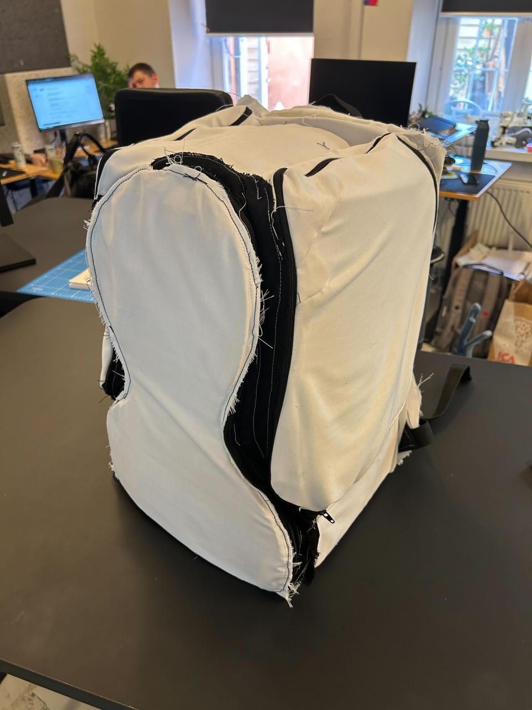
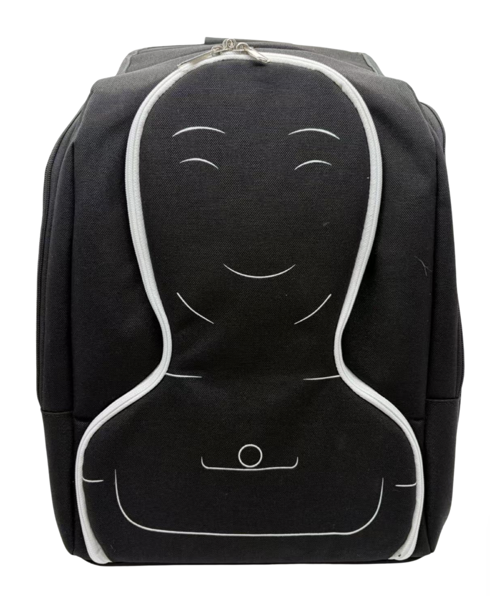
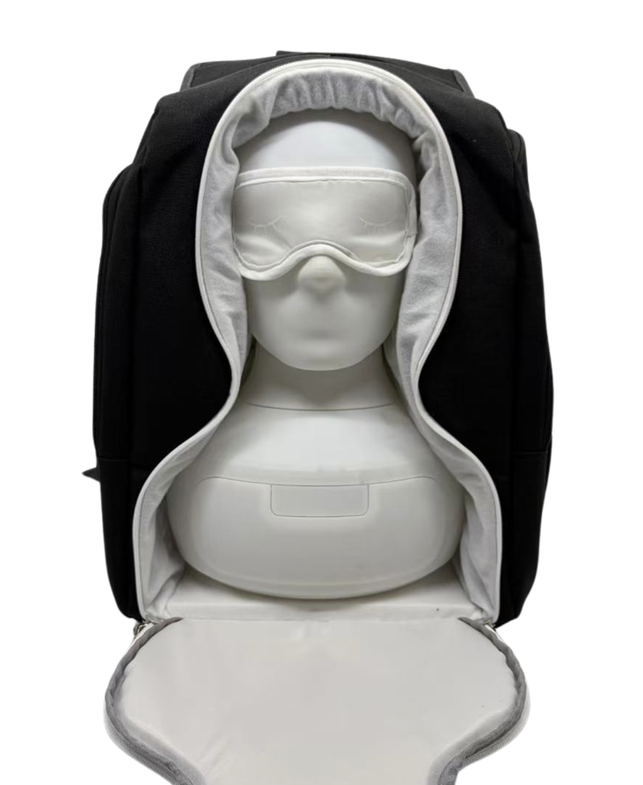

← Selected work
Product development / 2025 – 2026
Taking Furhat out into the world
From early sketches and sewn prototypes to a technical pack for a robot transport backpack.
- Context
- Furhat Robotics · Collaborative product development
- Period
- July 2025 – May 2026
- My work
- Concept development · Prototyping · Manufacturer coordination
The idea
Furhat needs to travel between demonstrations, research sessions, and events. I led the development of a dedicated backpack from scratch, exploring how its form, construction, and layout could accommodate the robot.
My contribution
- Developed concepts through sketches and morphological analysis.
- Built paper and sewn-fabric prototypes to explore the backpack’s construction.
- Prepared a technical pack to communicate the design to manufacturers.
- Worked with collaborators and manufacturers, including discussions and negotiations around the proposed product.
From an idea to a manufacturable proposal
The work progressed from exploratory models to developed backpack prototypes and manufacturing documentation. It combined hands-on making with the communication and coordination needed to move a product concept forward.


